The market as one 3D wheel: real Geigers where we have them, honest placeholders where we don't
Open the map. It is one picture of the market, from the top down. The market splits into regions and asset classes. US stocks split into the 11 sectors. Each sector holds its SPDR, iShares, Vanguard and Invesco equal-weight funds side by side, then its industry and theme funds, then the companies. Drag to turn it, scroll to zoom, click any ball for its card, and type a ticker in the search box. FLAT 2D lays it flat for reading.
29 Sep: the map now places all 590 served names
/universe fingerprint 116c79f2…). The map had been built for 486, so the 104 new names were simply not on it. Now every one of the 590 is a lit ball under its sector: 637 balls (was 544), 590 lit (was 497 on the same live reading), still 24 hollow "waiting for admission" (was 35 when built; 11 of those waiting names were in this admission and are now lit).
Counts, before and after. Re-running the old build on the 590 names placed 497 and left 93 missed (they would have gone under a catch-all "Other served lines" heading; the other 11 were already on the map, filed as waiting lines, and the page already lit them from the live reading). The new build places 590 of 590, 0 missed. A new test fails if any name the chart API serves is missing from either map, or sits in that catch-all.
Where each new name's place comes from. The admission list gives our own cohort, theme and funds for each name, not a sector. So each of the 104 was looked up in FMP's company profile (sector, industry, market value), read on 29 Sep at 05:48 UTC from inside the bar service on Fly (the FMP key never left that machine). The profile is translated to the standard sector list with the same table the 24 Sep tree uses. Nothing was guessed: a name with no profile would stop the build.
- Seven names had an FMP industry that table did not list yet, so six lines were added, each to its standard home: Trucking (XPO, ODFL → Industrials), metal fabrication (ATI → Industrials), home building (DHI → Consumer Discretionary), technology distributors (SNX → Information Technology), hotel REITs (RHP → Real Estate), healthcare information services (BTSG → Health Care).
- Four solar names (ENPH, NXT, RUN, SEDG) are "Energy" in FMP but sit in Information Technology, by the same rule the tree already used for FSLR.
- 39 of the 104 are S&P 500 members, and S&P's own sector agrees for 36. Three differ, and the map follows FMP, as the tree does: FIS and XYZ (Block) sit in Information Technology where S&P says Financials; LDOS sits in Information Technology where S&P says Industrials.
| SECTOR | NEW NAMES | WHICH |
|---|---|---|
| Information Technology | 36 | ACMR ACN CIEN ENPH ENTG FIS FN FORM FROG FTNT GDS GFS LDOS MCHP MPWR NET NTNX NXPI NXT OKTA ON ONTO PAYC QRVO RUN S SEDG SNX SWKS TER TOST TWLO UCTT UI VSAT XYZ |
| Health Care | 23 | ALNY ARGX BIIB BTSG CI DXCM EW GEHC GKOS HALO HCA HUM IDXX ILMN KRYS MRNA NTRA PTGX RMD RVMD TGTX TWST TXG |
| Financials | 13 | CATY CVBF FULT GPN HUT HWC MARA NU PYPL SFNC SYF TRMK UMBF |
| Utilities | 9 | CNP EVRG FE LNT NI NRG PNW PPL TLN |
| Industrials | 9 | AMRC ATI AXON HEI MOG.A NVT ODFL UAL XPO |
| Consumer Discretionary | 4 | DHI EAT RIVN XPEV |
| Communication Services | 4 | MTCH PINS RDDT SNAP |
| Materials · Energy · Real Estate · Consumer Staples | 2 · 2 · 1 · 1 | CLF RS · FTI SM · RHP · USFD |
Which funds hold the new names. The fund holdings are the same FMP file as before (26 Sep, 51 funds); it was not refreshed. 102 of the 104 new names are in at least one of those funds; GDS and XPEV are in none. 26 new names are a top-10 line of an industry fund, so they also hang off it: IBB (MRNA NTRA ALNY ARGX ILMN RVMD), IHI (EW DXCM RMD GEHC), KBE (SFNC CATY TRMK CVBF), CIBR (FTNT OKTA NET), IPAY (PYPL GPN XYZ), IYT (UAL ODFL), KRE (HWC FULT), IGV (FTNT), XHB (DHI), SKYY (NTNX). The share of each fund the striped holdings bar can read went up most for IBB (29% → 56%), CIBR (47% → 71%), IHI (42% → 65%), IPAY (35% → 58%), QQEW (77% → 93%), XLU (81% → 94%) and MDY (3% → 16%). KRE had no served holding before (0%), so it had no striped bar; now 7%, so 51 funds carry one instead of 50.
MOG.A. Moog's class-A share is served with a dot (MOG.A). The builders used to turn every dot into a dash (so FMP's BRK.B matches the Hub's BRK-B), which would have lost MOG.A from ITA, IWM and MDY. A served name now keeps its dot.
Five of the new names and where they now sit (Geiger as read at 05:50 UTC, 29 Sep; it moves):
- DXCM (DexCom, $32.7B): Health Care, also under IHI (4.6% of that fund), industry Health Care Equipment & Supplies, Geiger −0.07.
- HWC (Hancock Whitney, $5.9B): Financials, also under KRE, industry Banks, Geiger −0.44.
- NRG (NRG Energy, $20.5B): Utilities, next to PPL, CNP, TLN, PNW and NI (all new), industry independent power producers, Geiger −0.84.
- NET (Cloudflare, $125.7B): Information Technology, also under CIBR, industry Software, Geiger +0.71.
- MOG.A (Moog, $12.4B): Industrials, industry Aerospace & Defense, Geiger +0.45.
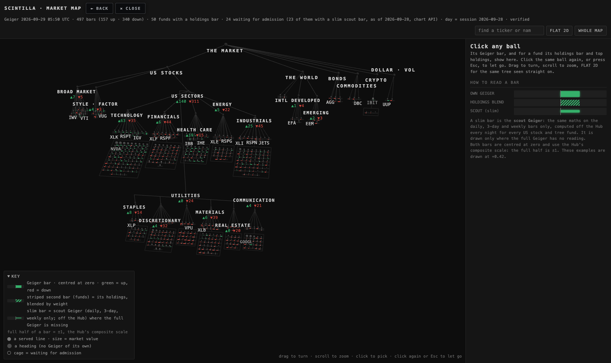
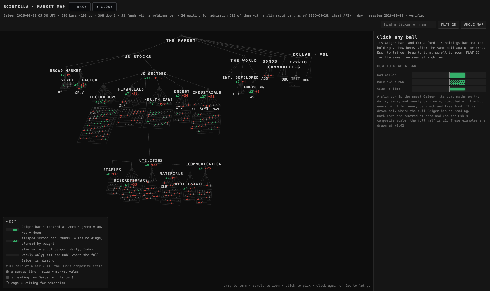
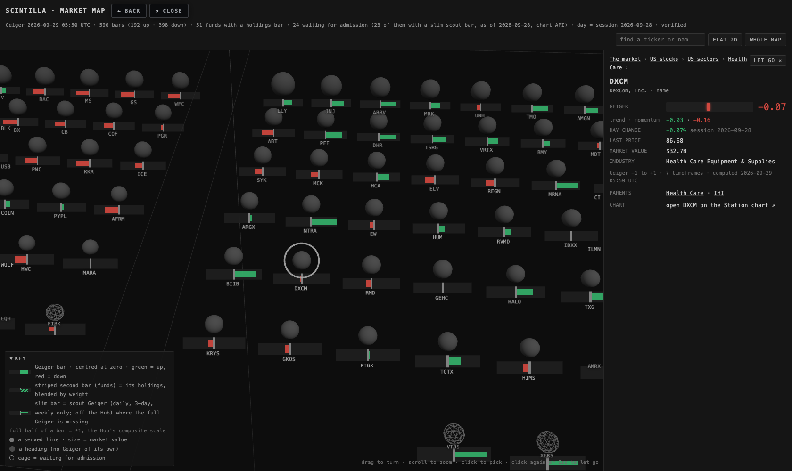
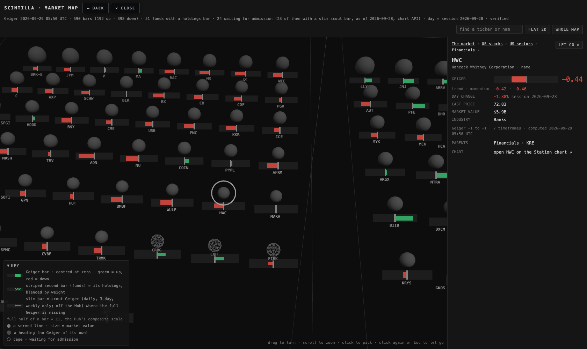
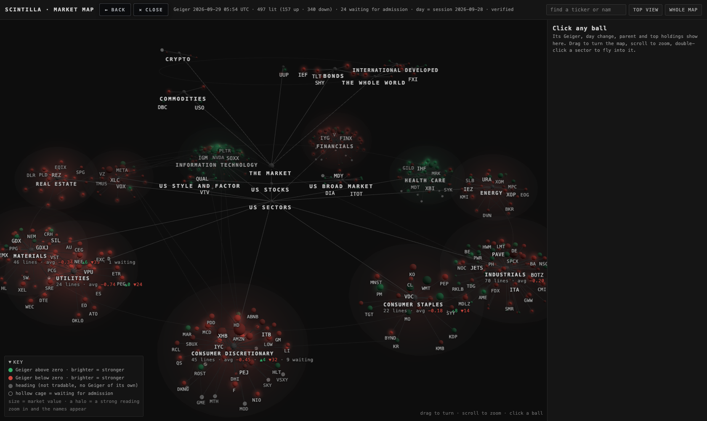
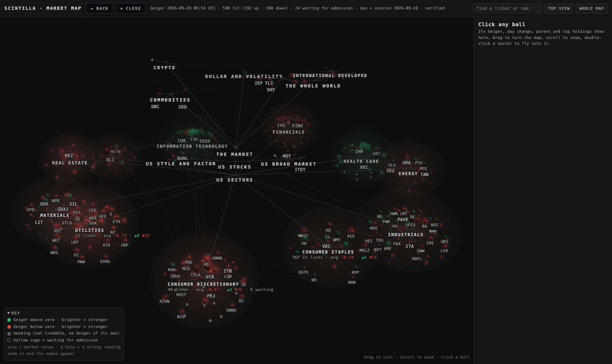
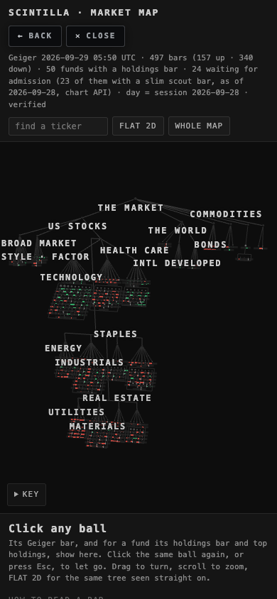
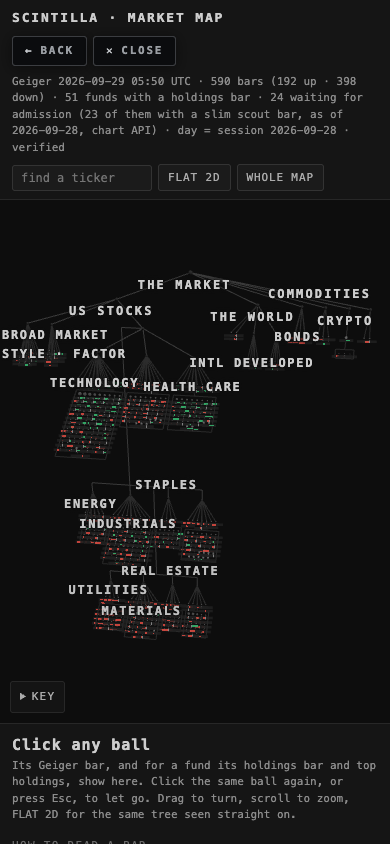
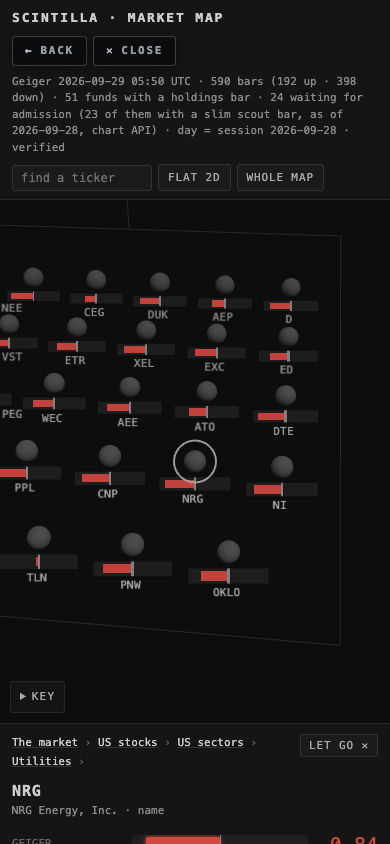
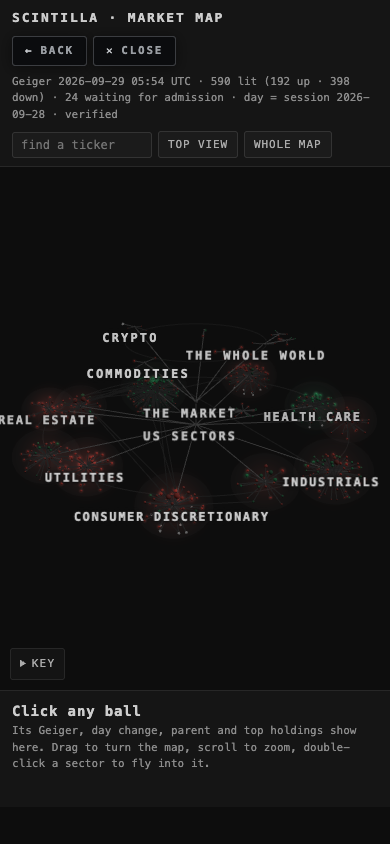
What could be wrong. The sector is FMP's, translated; it is not S&P's own list (three disagree, named above). Crypto miners are split: MARA and HUT (new) sit in Financials, as FMP says and as WULF already did, while RIOT, BTDR and HIVE (admitted 27 Sep) still sit under the Crypto heading, where their admission cohort put them. The 33 names admitted on 27 Sep are still placed by cohort ("approximate"), not by FMP. The fund holdings are three days old.
What I did not do. No deploy: this is a branch for the coordinator. The holdings file was not refreshed. The 28 Sep coverage tree (a study frozen at 486 names) was not rebuilt; its test now checks it against the r3 list it grew from. The 27 Sep names were not re-placed. Nothing was written to any database or R2.
The design (T2, 27 Sep evening): a wheel with an axle, not a tangle
Alan's note: "make it into the design… really make something very strong. Please wow me." The first build laid the 544 balls out with a physics simulation, so headings overlapped, the picture changed on every load, and the CPU spent its first seconds settling. This build computes every position from the tree itself, so it is the same picture every time and costs nothing to settle:
- The axle. THE MARKET, US STOCKS and US SECTORS sit on a short vertical spine in the middle. The broad-market and style funds (SPY, QQQ, IWM, RSP, VTV…) hug the axle on two sides.
- The rim. The eleven sectors sit on a rim around the axle, each given room in proportion to its size (Information Technology gets the most). Each sector is a ball of names: its four sector funds (SPDR, iShares, Vanguard, Invesco equal-weight) tight round the heading, its industry funds on a shell outside them, and the companies filling a sphere with the biggest by market value nearest the middle. A faint bubble marks each sector's edge so the eye groups it before it reads it.
- The crown. The world, bonds, commodities, crypto and the dollar float on a smaller, higher ring above the wheel, so the map has depth instead of one flat disk. The far side of the wheel sinks into the dark (fog set from the camera distance).
- Colour and strength. Green above zero, red below, brighter the stronger, and a soft halo on anything past ±0.45, growing with the reading. Each sector heading also carries a soft glow that is the plain average of its lit lines' Geigers, and the same number prints under the heading ("99 lines · avg +0.27 · ▲69 ▼27 · 3 waiting"), so the whole wheel reads from across the room: Technology green, Utilities red. That average is a summary for the eye, labelled as such; it is not a Geiger of the heading's own, and the card says so.
- Labels at every zoom. Labels are page text, not painted on the canvas, so they are crisp at any zoom. Headings always show. A fund's ticker appears when its ball is about 1.5 pixels across, a company's when it is about 3 pixels, so zooming in reveals names in order of size, and no two labels overlap: each frame keeps the more important label and drops the one that would collide (headings first, then sector funds, then the biggest companies).
- Moving about. Drag to turn, scroll to zoom. Click a ball for its card; the camera flies in and approaches a company from outside its sector, so the ball you chose is nearest to you and not hidden behind a bigger one. Click or double-click a heading to fly into its cluster. TOP VIEW looks straight down on the wheel; WHOLE MAP frames everything (the frame is computed by projecting every ball, so it fits both a wide screen and a phone). The map turns slowly by itself for its first 25 seconds, then rests.
- Cheap. All lit balls are one draw call, all cages one, all headings one, all lines one, all halos one. The page draws only while something moves and stops entirely when the camera is still (the numbers are below). Pixel density is capped at 1.5 so a 5K screen does not draw four times the pixels.
What each colour means
| green | The line's Geiger is above zero, meaning its trend and momentum lean up. Brighter green = stronger. A ball at +0.9 glows. A ball at +0.05 is barely tinted. |
| red | The Geiger is below zero. Brighter red = stronger down. |
| solid grey | A heading, such as "Information Technology" or "Bonds". It is not something you can buy, so it has no Geiger of its own. The funds under it each carry their own. |
| hollow cage | Waiting for admission. We know it belongs on the map, but the Hub does not serve it yet, so it has no Geiger. It shows no colour and no number, and its card says what admission would make it. |
| size | Companies are sized by market value (NVIDIA is the biggest ball) and the biggest sit nearest their sector's middle. Funds have one fixed size, because we hold no fund-size figure yet. |
| halo | A soft glow round a ball means a strong reading, past ±0.45 either way; the stronger, the wider. A sector heading's glow is the average of its lit lines. |
| lines | Each line means "belongs to". A company also links to every industry fund that holds it among its top 10: NVIDIA hangs off Information Technology, SMH, SOXX and AGIX. |
In the card, a day change is green when the line rose on the day and red when it fell, the house rule. Today is Sunday, so "day change" is Friday's session (25 Sep), and the card says so.
What is real
- The Geiger colour and number come live from the chart API
/geiger, the same reading the Hub shows. It is computed from 8 timeframes on a −1 to +1 scale. The top of the page prints when it was computed. On this build all 486 served lines came back, and none was missing (175 above zero, 311 below, computed 20:48 UTC, labelled VERIFIED). - Day change and last price come live from the chart API
/quotes, using the same rule as the Hub's CHG column. - Which lines are served comes from the chart API
/universe: 486 lines, fingerprint223dbb0f…. The test fails if that list moves and the map was not rebuilt. - Top holdings with weights come from the FMP holdings file of 26 Sep, covering 51 funds. The card shows the fund's top 10, cash lines removed, dated "FMP 2026-09-26".
- Sector and industry of each company, and its market value come from the 24 Sep tree work (
data/standard-tree-20260924.json, GICS categories).
What is placeholder
- 35 hollow cages:
- 33 companies that are big holdings of our sector and industry funds but have never been admitted, such as FTNT, PYPL and DHI. They sit under the sector of the fund that holds them, and the card says which fund placed them.
- 2 funds on the admission list but not served yet: QQEW and IBIT.
- Funds have no size. We hold no assets-under-management figure, so every fund ball is the same size.
- The sector glow and the "avg" under each heading are a plain average of the lit lines directly under it, unweighted. That is a summary for the eye, not the children's blend described next.
How each fund's own Geiger and its children's blend will work (later, back end only)
As you asked, every tradable parent (XLK, SMH, VT…) gets its own Geiger once admitted, read from its own price like any other line. That is the colour the map shows. Separately, the back end will compute a "children's blend" for each fund. It is never shown on the Hub. The recipe:
- Take the fund's holdings file, dated. It is 26 Sep today.
- Sort the holdings by weight. Take them from the top until they add up to 80% of the fund's weight.
- Rescale those weights so they add to 100%. Multiply each company's Geiger by its weight, and add them up. That sum is the blend.
- Store alongside it how much of that 80% actually had a Geiger (the "coverage"), and the holdings date.
- Recompute whenever the fund rebalances, meaning when a new holdings file arrives with a later date.
What that looks like today, from the 26 Sep holdings against the 364 lines served when this table was made (the Geiger-only funds were admitted later the same day; the table was not redone). This counts only; no blend was computed:
| fund | holdings | names to reach 80% | of those, served today | weight with a Geiger |
|---|---|---|---|---|
| XLK | 77 | 21 | 21 | 80.7% of 80.7% |
| XLF | 80 | 27 | 27 | 80.1% of 80.1% |
| XLE | 24 | 11 | 11 | 80.8% of 80.8% |
| SMH | 27 | 13 | 12 | 76% of 80.5% |
| SOXX | 33 | 16 | 13 | 72.1% of 81.3% |
| IGV | 109 | 20 | 15 | 71.8% of 80.7% |
| QQQ | 106 | 35 | 35 | 80.6% of 80.6% |
| SPY | 505 | 127 | 124 | 79.5% of 80% |
| VTI | 3,516 | 229 | 202 | 77.6% of 80% |
| RSP | 511 | 393 | 197 | 40% of 80% |
| IBB | 246 | 42 | 4 | 28.9% of 80.2% |
| XRT | 76 | 56 | 8 | 11.8% of 81% |
| KRE | 169 | 89 | 0 | 0% of 80.1% |
| IWM | 1,988 | 737 | 12 | 1.9% of 80% |
| VXUS | 8,832 | 2,704 | 3 | 0.2% of 80% |
| DRAM | 26 | 9 (all listed) | 4 | 13.3% of 35.7% |
What this says in plain words: the SPDR sectors, QQQ and SPY are almost fully covered today, so their blends could be computed now. Small caps (IWM), regional banks (KRE), retail (XRT), biotech (IBB) and everything outside the US (VXUS) mostly hold companies we don't serve. Their blend would be thin until more names are admitted. DRAM's file lists only 9 of its 26 holdings (15% is cash), so its file needs refreshing before a blend means anything.
The "scintillate" hook (named, not built)
The page has a function called scintillate(node, multiple) and a setting SCINTILLATE_MULTIPLE = 3. The idea: a ball flashes when today's move is 3 times its usual day. The function exists and says where it plugs in, but it does nothing and nothing calls it, so there is no animation yet. A test checks that it stays that way until you ask.
Proof: what the screenshots actually show
These are real headless-browser screenshots, taken with no window on your screen. The 3D canvas renders headless using software graphics (SwiftShader), so the flat 2D fallback was not needed. The chart API only answers the scintillahub.ai address, so for these local shots I relaxed the cross-origin check in the throwaway headless browser only. The page itself is unchanged.

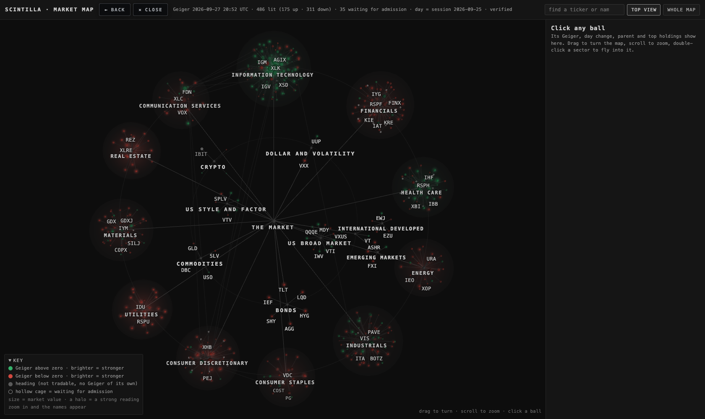
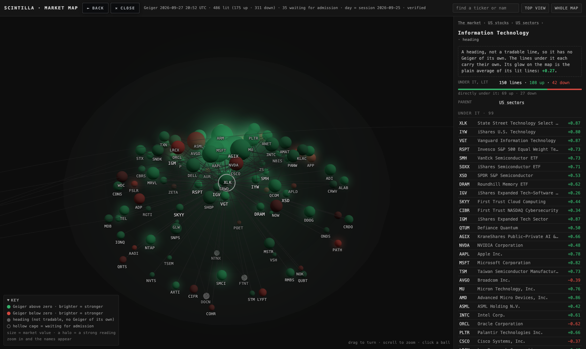

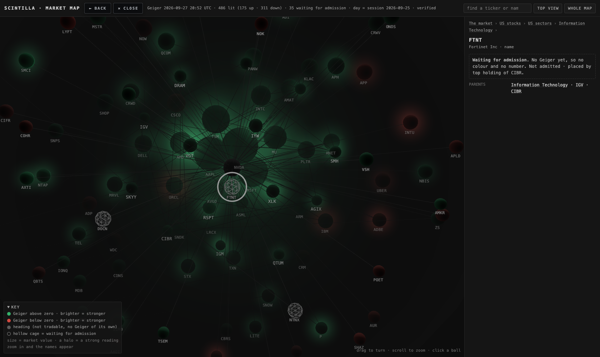
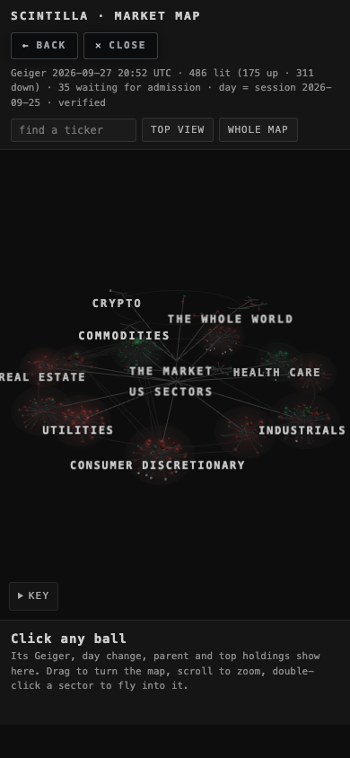
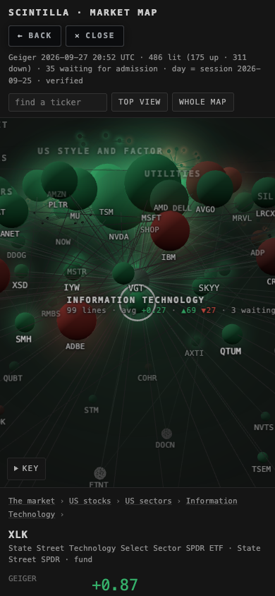
CPU, measured
Three cases, on this MacBook, headless: the opening 20 seconds while the wheel turns by itself; 60 seconds untouched after it rests; then 60 seconds of nonstop dragging. The figure is CPU-seconds used per minute over every Chrome process ("whole Chrome") and, separately, the page's own main thread. For scale, 60 would be one core fully busy. The first build's figures are beside them, same script, same machine.
| graphics | opening turn · whole Chrome | idle · whole Chrome | idle · the page | dragging · whole Chrome | dragging · the page |
|---|---|---|---|---|---|
| this build · Mac GPU (Apple M5 Max, headless) | 17.1 | 0.5 | 0.01 | 17.7 | 6.0 |
| first build · Mac GPU | not measured | 1.2 | 0.01 | 23.3 | 14.0 |
| this build · software graphics (SwiftShader) | 632 | 0.4 | 0.01 | 700 | 0.8 |
| first build · software graphics | not measured | 2.3 | 0.01 | 638 | 3.3 |
Idle is zero: once the camera is still the page stops drawing (0.5 CPU-seconds a minute for the whole browser, none of it the page). Dragging costs about a third of a core on a real GPU, and the page's own share fell from 14 to 6 against the first build, because there is no simulation to run and the balls are drawn in five draw calls instead of 544. The headless GPU run drew 82 frames a second because nothing capped it; a real screen caps at 60, so the figure on a screen is lower still. The software rows only show that painting pixels on the CPU is expensive; no real screen does that. The old iMac was not measured (the rule is never to touch it), so treat "cheap on an old iMac" as expected from these figures, not proven: its GPU is what will do the drawing, and the page draws nothing while it sits.
What could be wrong
- The Geiger label on the final screenshots is "verified" (the chart API's own word); earlier in the day it was "complete unstamped".
- The holdings are one day old (26 Sep) and change when funds rebalance. The VXUS and VT files stop at 4,000 lines.
- Fund issuers and some fund names are hand-typed in
scripts/build-market-map.mjs. A typo there would show on a card. - The 33 candidate companies sit under a sector chosen from their cohort, which is approximate.
- "Link to the Hub company view" became a link to the Station chart, the same chart the Hub's company view shows inside it. The Hub has no address that opens one company directly (see decision 1).
- The layout is now fixed: the same picture every load. The 33 never-admitted companies still sit under the sector of the fund that holds them, which is approximate.
- The sector glow is an unweighted average of its lit lines; a sector with a few strong movers can look stronger than its big names feel.
What I did not do
- No admission. Nothing was added to the served set, and the hollow balls stay hollow until the admission run lands.
- No blend computed or stored. The recipe and the coverage counts above are all there is.
- No scintillate animation.
- No push, no deploy, no database write, no paid model call.
- I did not open the Perplexity reference page. The brief gave its structure and said its readings are random, so I built from the holdings file and the 24 Sep tree instead.
- The map is a leaf on the workshop's branch map (workshop/manifest.json), not yet in the prototypes library.
- The old iMac was not measured, by rule.
Files
deliverables/20260927/market-map/index.html: the working map.deliverables/20260927/market-map/nodes.json: the one node list, the source of truth. It holds structure only, no readings.scripts/build-market-map.mjs: rebuilds the node list from /universe, the tree, the holdings and the admission list.tests/market-map.test.mjs: checks that every parent exists, that there are no cycles, that every served ticker matches /universe, that no reading is stored, and the house colours.deliverables/20260927/market-map/proof.mjs: the headless screenshot and CPU script (opening turn, idle, dragging).deliverables/20260927/map-workshop/MAP-WORKSHOP.html: the T2 write-up, with the workshop's manifest format.